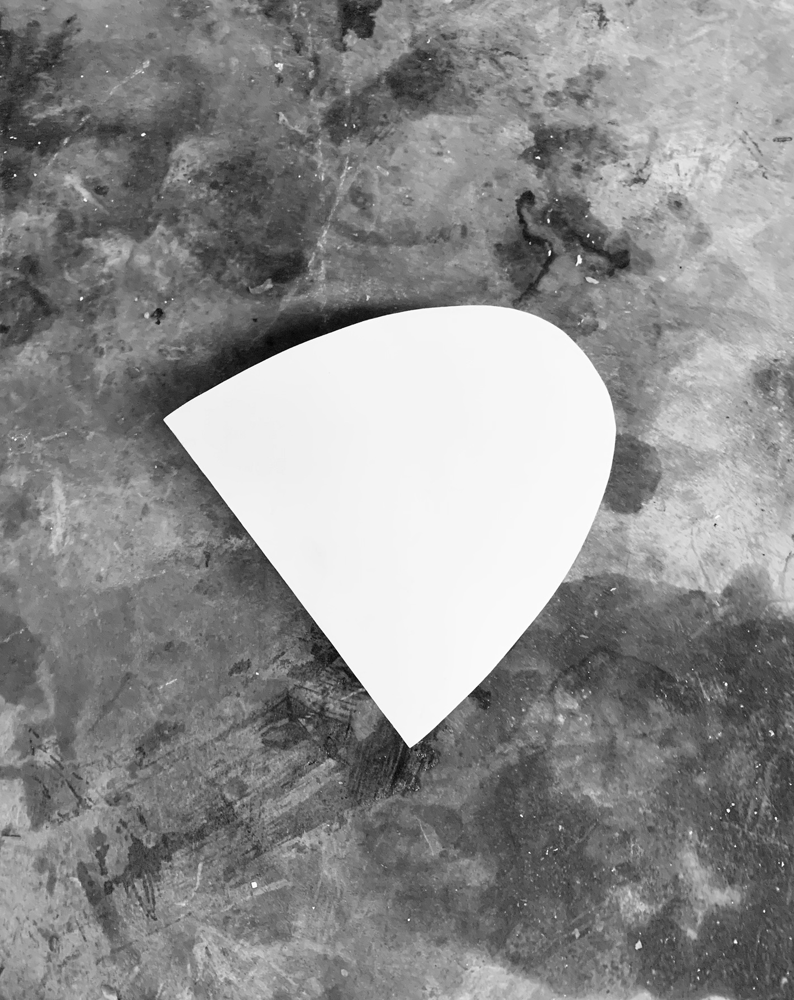
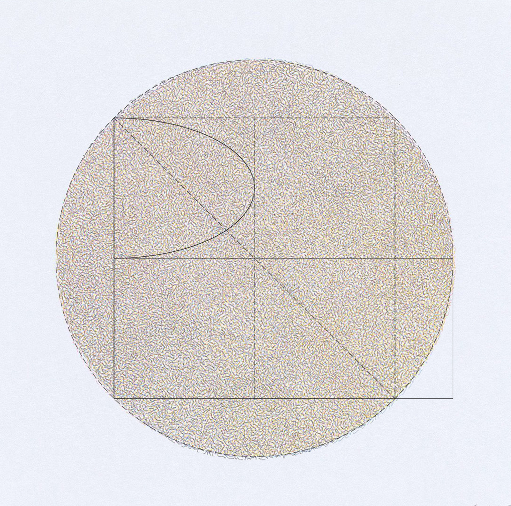
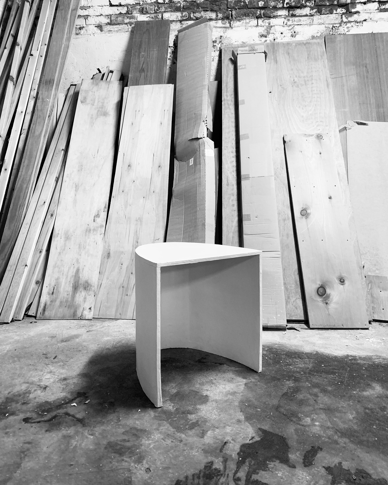
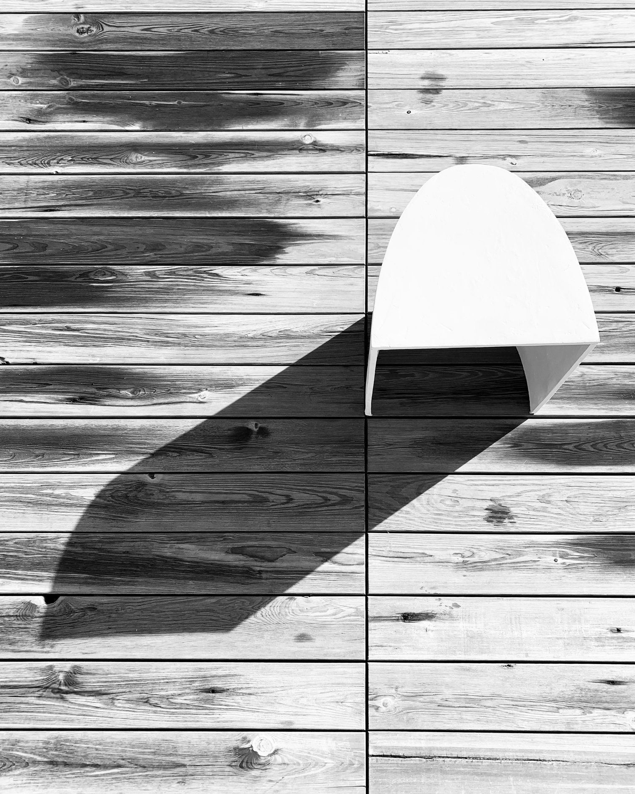

P 004
Hockny
A stool design inspired by artist works such as Richard Serra's elliptical steel sculptures, Josef Albers' "Homage to the Square" paintings and Eva Hesse's 1964 paper sculpture series. Based on simple geometric forms Hockny is the synergy between square and circle, translated into a three dimensional object.


